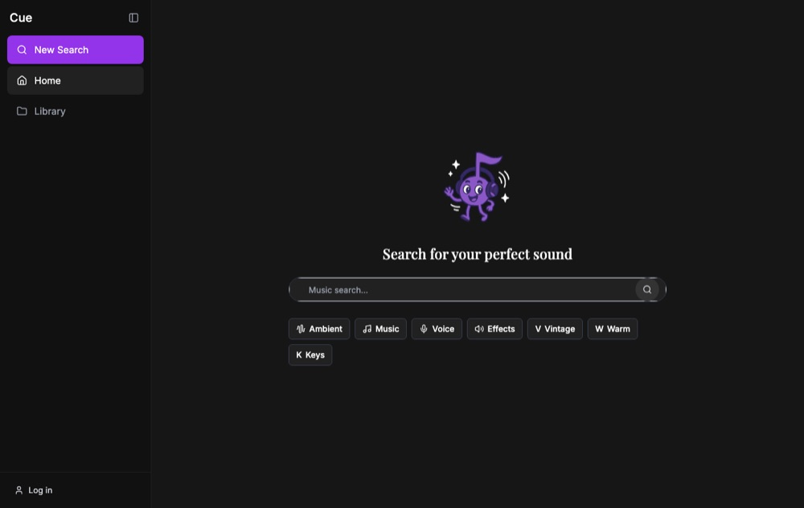
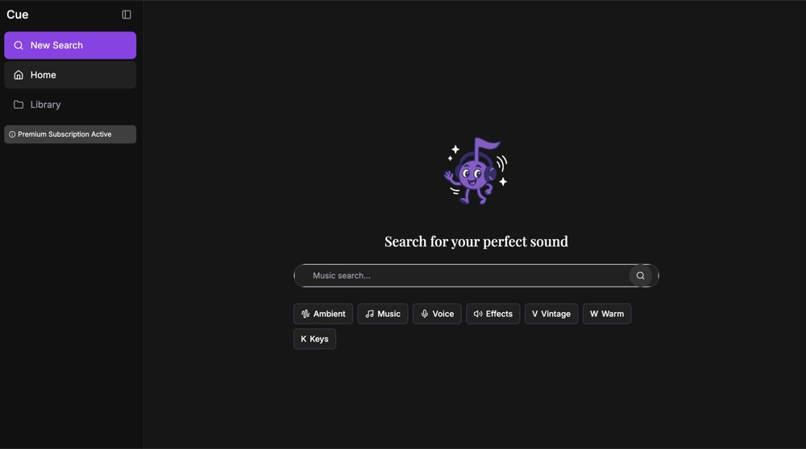

Case file · AI + Music
Cue
Semantic sound search for music producers: describe a sound in words and get production-ready audio.
§ 01 · The problem
Finding a sound should not break your flow.
Cue was built around the friction of finding the right sound in the middle of making something. Behind it are 25+ producer interviews and an MVP that shipped in a single sprint cycle.
The idea is simple: describe the sound you want in plain language, and get production-ready audio back.
§ 02 · What it does
Say what you want to hear.
The app opens on one prompt: Search for your perfect sound.
-
Search in words.
Describe a sound in language, and Cue turns the description into a search over its sound library. Tags can narrow the results.
-
Audition in the browser.
Every result plays inline, one at a time, so you can compare sounds without stacking them up.
-
The details that matter.
Each sound carries its BPM and key, plus duration and tags, so you can tell whether it fits a track.
-
Save and download.
Save a sound to your library, or download it, right from its card.
-
A personal library.
Your saved sounds live in one place with their own search, so a find is easy to come back to.
-
Search history.
Past searches are grouped by recency: today, yesterday, the past three days, and the past seven.


§ 03 · Design choices
Four choices that shaped it.
-
Describe, don’t browse.
One prompt is the whole front door, with category chips and tags as quick starting points and filters.
-
Audition before you commit.
Sounds play in place, and starting one stops the last, so you hear each sound on its own.
-
Producer metadata up front.
BPM and key sit on every sound, since those decide whether it will work in a track.
-
Accounts and a library.
Search and saving sit behind a login, so each producer builds their own collection over time.
§ 04 · Under the hood
Next.js on Supabase, with OpenAI in the loop.
Cue is a Next.js app written in TypeScript, with a shadcn/ui component set. Supabase handles sign-in, the sound library, user collections, and the audio files themselves.
Search is a single endpoint that takes a text query and optional tags. An OpenAI-backed helper interprets the query, and the matching sounds come back from Supabase.
§ 05 · Shipping log
From a starter to an app.
-
April 9, 2025
A first repository
The first Cue repository starts from a Next.js starter.
-
April 29, 2025
The Cue app on GitHub
The app’s code lands in a public repository, with semantic search, a saved library, search history, and accounts.
§ 06 · Where it stands
Live, and early.
Cue is live at cue-self.vercel.app, and searching requires an account. The app also has a Premium subscription.